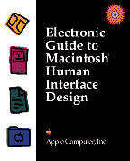

Electronic Guide to Macintosh Human Interface
Design
Electronic Guide to Macintosh Human Interface
Design combines the full electronic text of the classic book,
Macintosh Human Interface Guidelines, with the multimedia
presentations of Making It Macintosh on one convenient and
easy-to-use CD-ROM disc. Anyone involved in programming the
Macintosh or designing any type of computer interface will find
Electronic Guide to Macintosh Human Interface Design to be
an essential resource.
- The illustrations, animations, and examples found on the
award-winning Making It Macintosh are an invaluable
reference to Macintosh interface design. This interactive guide
contains over 100 animated examples that demonstrate the
correct use of Macintosh interface elements, including visual
examples illustrating the appearance and behavior of menus,
windows, dialog boxes, icons, language, and QuickTime.
- The electronic version of Macintosh Human Interface
Guidelines contains hypertext links for easy navigation
between the book and the examples in Making It
Macintosh.
System Requirements:
- A Macintosh with at least 8 MB of memory, a 13-inch color
monitor and a CD-ROM drive
- Macintosh System 7.0 or later
- QuickTime (The QuickTime system extension is included on
this disc for you to install if it's not already resident in
your Macintosh.)
Availability: Click below to order Electronic Guide to
Macintosh Human Interface Design from the Apple Developer
Catalog.